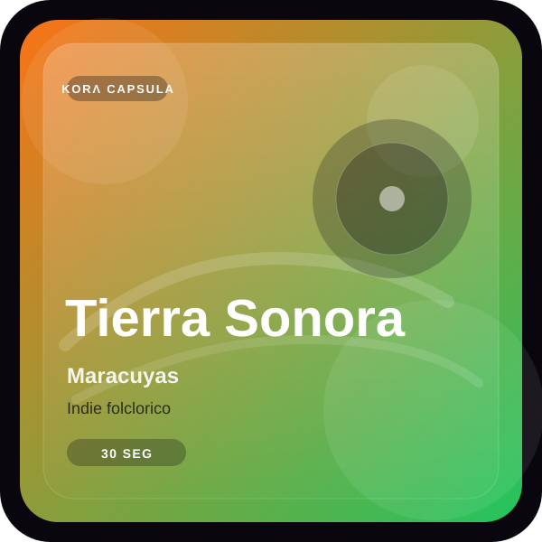
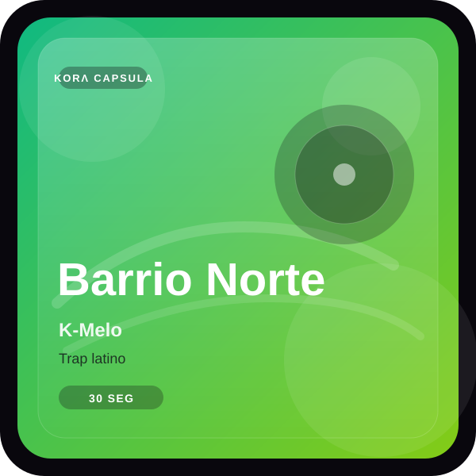
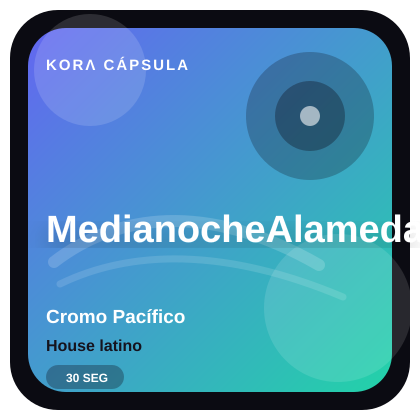

Escucha 30 segundos
Una muestra breve para saber si ese sonido merece seguir.
Artistas emergentes · escenas locales
30 segundos. Artistas emergentes. Contexto de ciudad, barrio y escena.
Prototipo en validación · Cali, Colombia

Valentina Cruz
Cómo funciona
Descubre antes de saber qué nombre buscar.
Una muestra breve para saber si ese sonido merece seguir.
Ciudad, barrio y comunidad explican de dónde viene lo que escuchas.
Guarda el hallazgo o sigue explorando sin perder el hilo.



Lo que tu feed no te cuenta
KORΛ DISCOVER te ayuda a encontrar artistas antes, entender el lugar y la escena de donde vienen y decidir si conectan contigo.
Primero escuchas; después decides si quieres seguir.
Ciudad, barrio y escena explican de dónde viene ese sonido.
Encuentra artistas que la popularidad todavía no empuja.
Tu feed no es toda la escena
Cali es el punto de partida; la lógica funciona donde exista una escena por descubrir.
Explora la idea
Preguntas frecuentes
Una experiencia digital para descubrir artistas emergentes en 30 segundos, con contexto de ciudad, barrio y escena.
Combina cápsulas de 30 segundos, artistas emergentes y contexto de ciudad, barrio y escena para que descubrir música nueva sea más rápido y significativo.
No. Cali es el punto de partida del prototipo; la propuesta está pensada para crecer a otras escenas.
No. Está en etapa de prototipo y validación, con una versión funcional disponible para probar.
KORΛ DISCOVER
30 segundos. Contexto local. Una escena nueva por explorar.